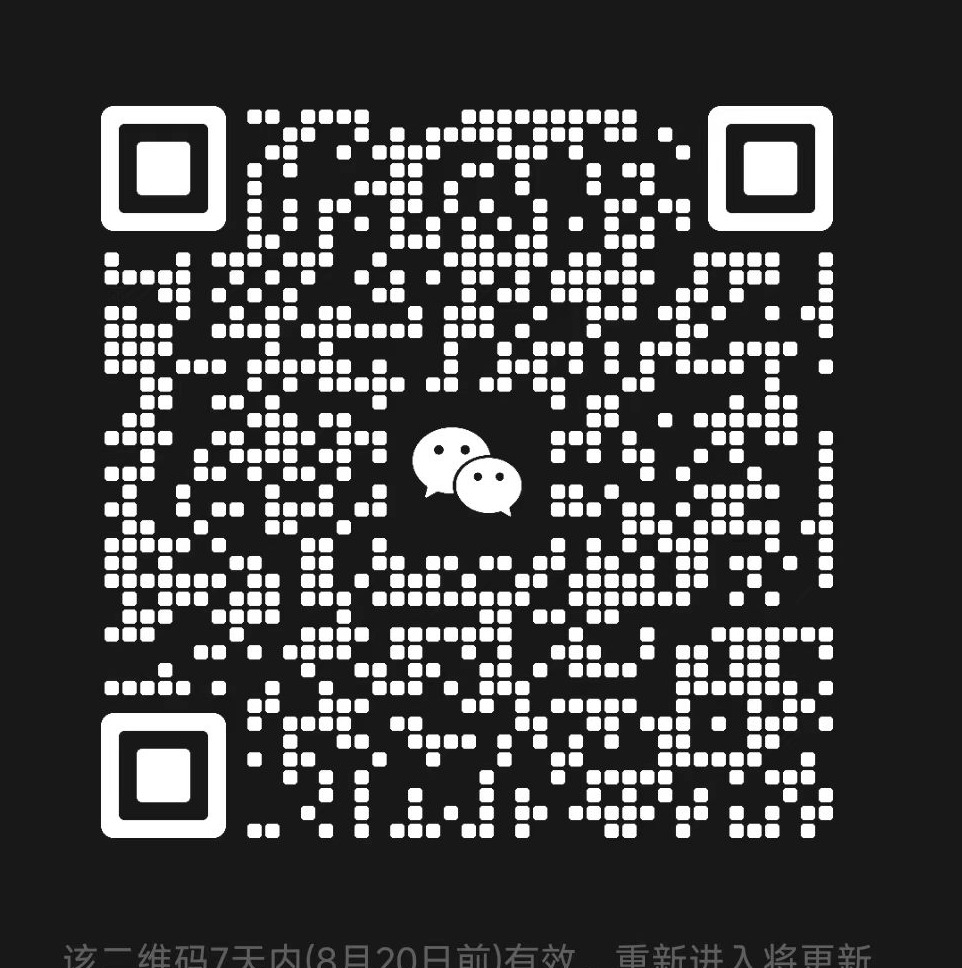

特 别 信 号
最后一封信
你准备离开直播间的时候，看见椅子扶手上还贴着一张纸——刚才没有的一张。打印的，边角烧焦了，像是被人从火里抢出来过。
纸上只有一个二维码。底下用铅笔写着一行小字：
「扫它。我们都在里面。你也是。」
字迹很熟。你在本台的每一期节目单上，都见过这个字迹。

微信扫描二维码，加入听众群
它一直在等有人扫它
你准备离开直播间的时候，看见椅子扶手上还贴着一张纸——刚才没有的一张。打印的，边角烧焦了，像是被人从火里抢出来过。
纸上只有一个二维码。底下用铅笔写着一行小字：
「扫它。我们都在里面。你也是。」
字迹很熟。你在本台的每一期节目单上，都见过这个字迹。

微信扫描二维码，加入听众群
它一直在等有人扫它
三角测量完成 · 信号源与接收端重合
■ 信号已锁定 ■